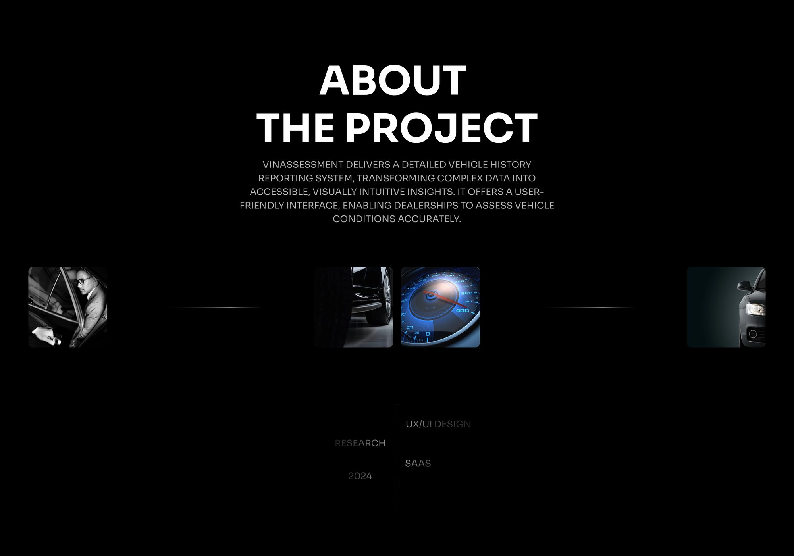

Context
Buying a used car is a bet on its past. Was it in an accident? Sold at auction? How many owners? VinAssessment collects that history by VIN and turns it into a report: auction photos, title records, previous owners, listing and price history.
Two audiences use it. US car dealers check dozens of cars a day and track their own sales. Private buyers want to know if one car is safe to buy. Around the dealer platform grew two consumer products, connected by one browser extension.
B2B · dealersVinAssessment ↗Vehicle history reports, window stickers and a dealer dashboard.
B2C · buyersVehiSales ↗A marketplace to browse and compare used cars across the US.
B2C · buyersVehiLeaks ↗Vehicle history reports for buyers, with a Chrome extension.
